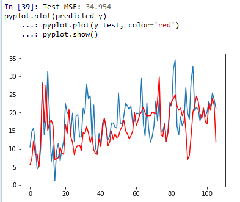

预测问题是机器学习中很重要的一个问题，它是根据过去已经存在的数据预测未来可能的情况。本文通过一个著名的波士顿抢劫案的数据集来说明预测问题的来龙去脉。
AR自回归模型预测
数据集
This dataset describes the number of daily female births in California in 1959.
它的结构很简单，每一行是一天的数据，每一行有两个数据，第一个是日期，第二个是人数。
用Python加载数据集
1 | from pandas import Series |
series.plot()是pandas的Series自己提供的数据可视化方法。
选择一种预测模型
这里我们先选择使用最广泛的自回归模型来看看。
Autoregressive model
自回归模型（英语：Autoregressive model，简称AR模型），是统计上一种处理时间序列的方法，用同一变数例如x的之前各期，亦即$x_1$至 $ x_{t-1}$来预测本期 $x_$ 的表现，并假设它们为一线性关系。因为这是从回归分析中的线性回归发展而来，只是不用x预测y，而是用x预测x（自己）；所以叫做自回归。
自回归模型被广泛运用在经济学、信息学、自然现象的预测上.
自回归模型（Autoregressive Model）是用自身做回归变量的过程，即利用前期若干时刻的随机变量的线性组合来描述以后某时刻随机变量的线性回归模型，它是时间序列中的一种常见形式.
P阶自回归模型，记作AR(p),含义是序列中$x_t$是前p个序列$(x_{t-6},x_{t-5},x_{t-4},x_{t-3},x_{t-2},x_{t-1})$ 和误差项通过线性组合而成的。
优点与限制
- 必须具有自相关，自相关系数（$\varphi _{i}$）是关键。如果自相关系数(R)小于0.5，则不宜采用，否则预测结果极不准确。
- 自回归只能适用于预测与自身前期相关的经济现象，即受自身历史因素影响较大的经济现象，如矿的开采量，各种自然资源产量等；对于受社会因素影响较大的经济现象，不宜采用自回归，而应改采可纳入其他变数的向量自回归模型。
使用AR模型的训练和测试
1 | # 下面该选择用来预测的模型了， |
上面我们使用的是AR(6)模型。就是用前6个数据去预测第七个数据。如此循环，不断调整参数，减小损失函数。

保存训练好的模型，以便以后的使用：
1 | # save model to file |
与之对应的加载模型的方法
1 | # load the AR model from file |
线性回归预测
使用神经网络实现简单的线性回归
数据集
The problem that we will look at in this tutorial is the Boston house price dataset.
The dataset describes 13 numerical properties of houses in Boston suburbs and is concerned with modeling the price of houses in those suburbs in thousands of dollars. As such, this is a regression predictive modeling problem. Input attributes include things like crime rate, proportion of nonretail business acres, chemical concentrations and more.
使用keras用简单的神经网络模拟线性回归
我们使用Keras构造一个简单的全连接的神经网络来模拟回归模型，做出预测。
1 | # -*- coding: utf-8 -*- |
epochs = 1000 的时候的结果：

epochs = 1500 的时候的结果：

我们可以借助keara提供的scikit-learn API来和scikit-learn互动，这样我们可以更加方便的使用scikit-learn实现的交叉验证方式来测试我们的神经网络。
首先，我们把定义神经网络模型的代码写成函数的形式：
1 | # define base model |
我们使用KerasRegressor来打通和scikit-learn的连接。’nb_epoch=100, batch_size=5, verbose=0’这些参数都是kears模型fit的时候需要的参数。
1 | # evaluate model with standardized dataset |
K折交叉验证和结果的评估：
1 | kfold = KFold(n_splits=10, random_state=seed) |
为了方便理解和描述，我们这里只是介绍一下交叉验证的实现方法，并不使用。我们还是使用上面完整一段代码里用的手工划分训练集和测试集的方法。
神经网络结构的调整和性能的比较
我们改变一下上面定义的神经网络的结构，看结果是不是会发生变化。
1 | model.add(Dense(13, input_dim=13, kernel_initializer='normal', activation='relu')) |
原来的结构是13 inputs ->13 -> 1, 现在变成了13 inputs -> 13 -> 6 -> 1. epochs = 1000 得到的结果是：

可以看到并没有太大的提高。我们再尝试使用更多的隐层神经元试试。
1 | model = Sequential() |

还是没有太大的提高，估计这种简单的模型也只能是这个水平了。
参考资料：http://machinelearningmastery.com/regression-tutorial-keras-deep-learning-library-python/
参考文献：